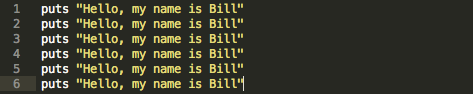
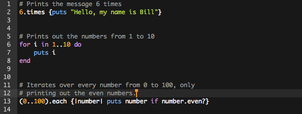
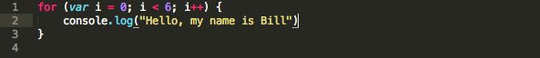
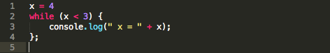

One of the powerful things about using programs to do things for us is that computers can do a particular task thousands or even millions of times over very easily and very quickly. One of the most common ways to achieve this is to use loops or iterators. Let's say we wanted to do something like print out a simple message a few times.
Now, it is unlikely we would ever really want to do this, but if we did, we can use a loop to do the work for us so that we don't have to type the message in six times. We want our code to be DRY (Don't Repeat Yourself). So let's take a look:
Those are a few examples of ways to loop or iterate over a piece of code several times. The first one will do exactly what our handwritten version above will do, but far more efficiently. We'll call that a "times" loop. The next example is a for loop, which is very common in many languages, although the exact syntax does vary. But, in every case it is doing basically the same thing: for x number of times, do this thing. In this case it is simply printing out the numbers from one to ten. The last example is an "each" iterator. For each number in the set from 0 to 100 the chunk of code in the block looks at that number and prints it out if it is even. While that is still a trivial example, I hope you are beginning to see how useful a tool loops and iterators can be. I'll note that Ruby also has do...while loops, while loops, and do...until loops. Although the syntax is different in each case, they all serve the same purpose of letting you loop through a bit of code over and over.
But that's Ruby. What about JavaScript?
JavaScript also has loops and iterators, but they are a bit different in syntax, and there aren't quite as many options. For loops in ruby look a lot like they do in Java and C#.
Notice the first line up there. That is very common in many languages. You say that you have a for loop, and inside the parentheses you see a variable declaration, a condition, and an expression. Here's how that works:
- var i = 0 sets our loop counter variable to 0
- i < 6 ensures that our loop will run for as long as this is true
- i++ this simply increments the counter variable after each time the code the brackets is run
What is important to remember is that the middle part, that conditional check, isn't made until AFTER we have run the code in the brackets at least once. If we wanted to check a condition BEFORE we ran the code, a WHILE loop would be a better fit for us.
The code above won't print anything out because the condition fails when it is first checked. There is also another interesting thing about that bit of code: if x had been less than 3, you have entered an infinite loop because the value of x is not changed inside of the while loop, so the condition that keeps the loop running will always remain true.
Ruby as a language has many more powerful built-in tools than JavaScript in some regards, but both programs offer you ways to loop through and repeat code quite easily. Ruby's focus is on iterators, methods that step through sets of data, while JavaScript is more about FOR and WHILE loops that use counters. Either way will get the work done, and remember to always choose the right tool for the job!
Happy Coding!